Shillong
Shillong, the capital, is known for its pleasant climate and picturesque landscapes. Visit the Shillong Peak and the Don Bosco Centre for Indigenous Cultures.
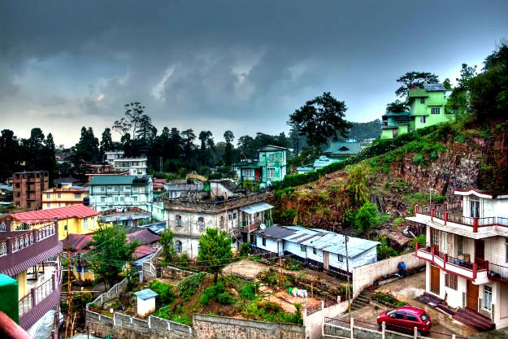 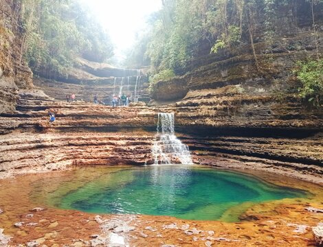
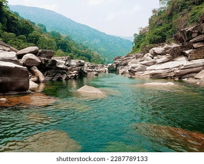
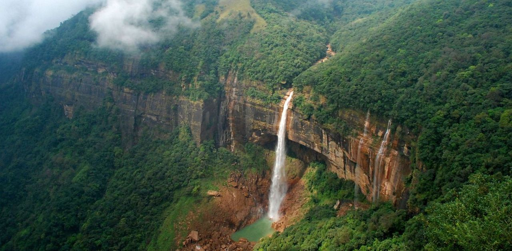
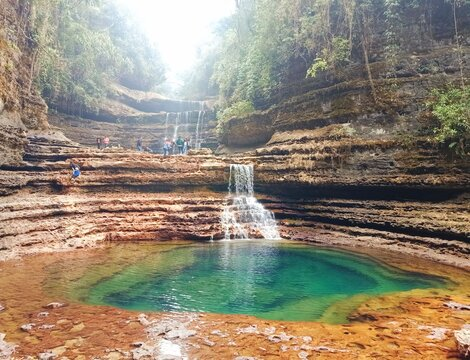
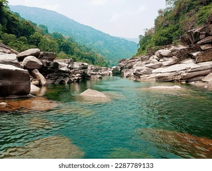
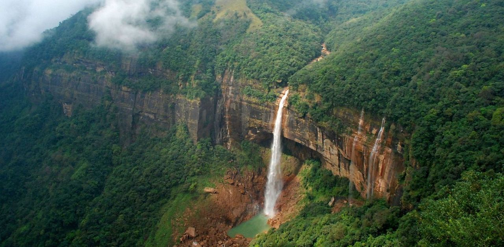
Shillong, the capital, is known for its pleasant climate and picturesque landscapes. Visit the Shillong Peak and the Don Bosco Centre for Indigenous Cultures.
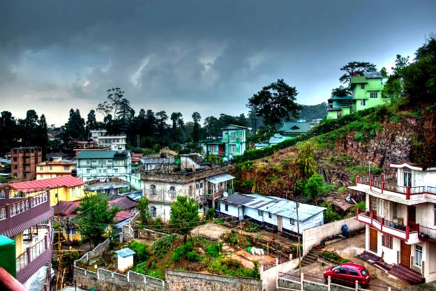
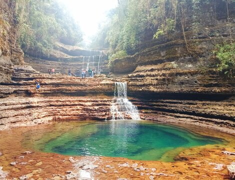
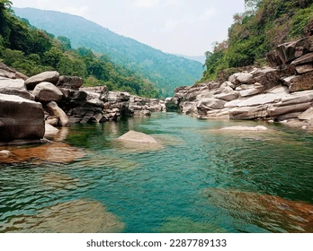
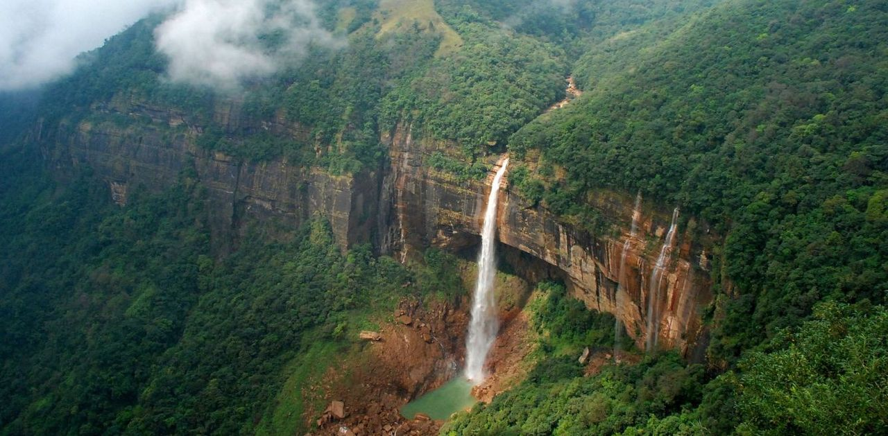
Cherrapunji, famous for its heavy rainfall, offers breathtaking views of lush greenery. Explore the Nohkalikai Falls and the Mawsmai Cave.
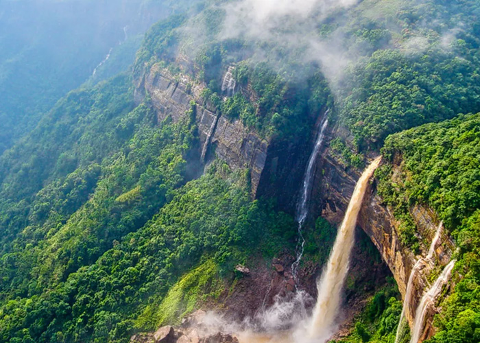 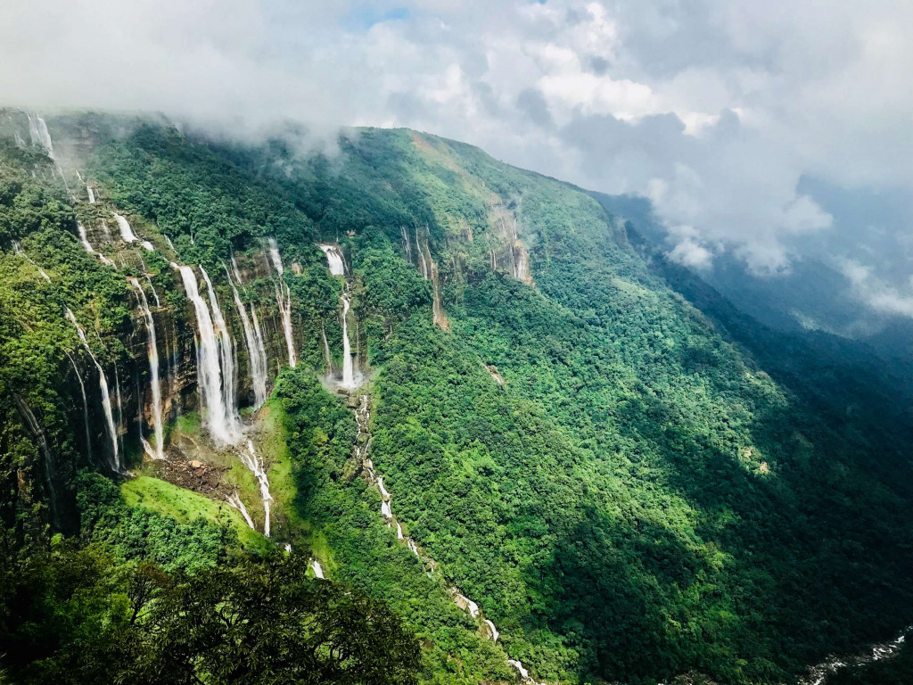 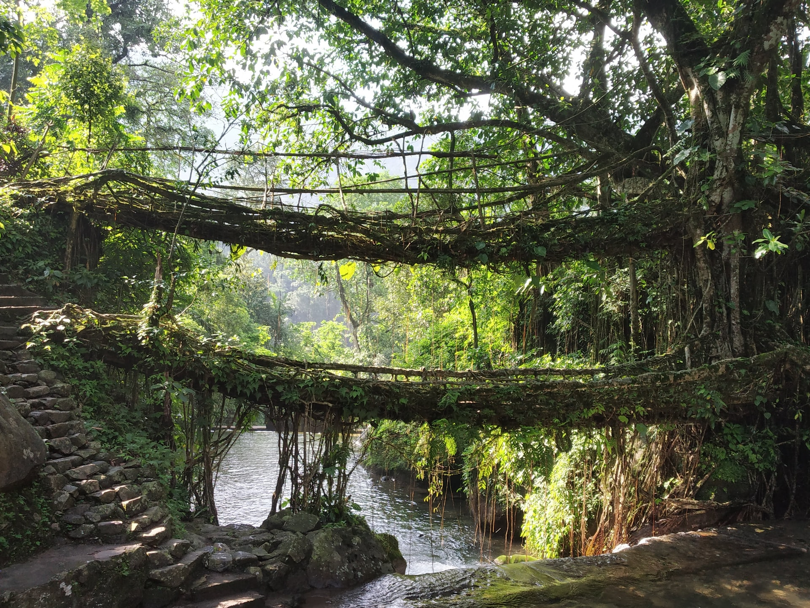 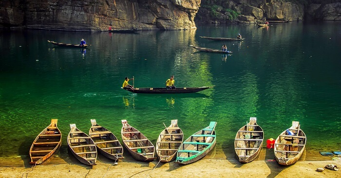
Meghalaya is known for its unique living root bridges, created by guiding tree roots across rivers. The Double Decker Living Root Bridge is a must-see.